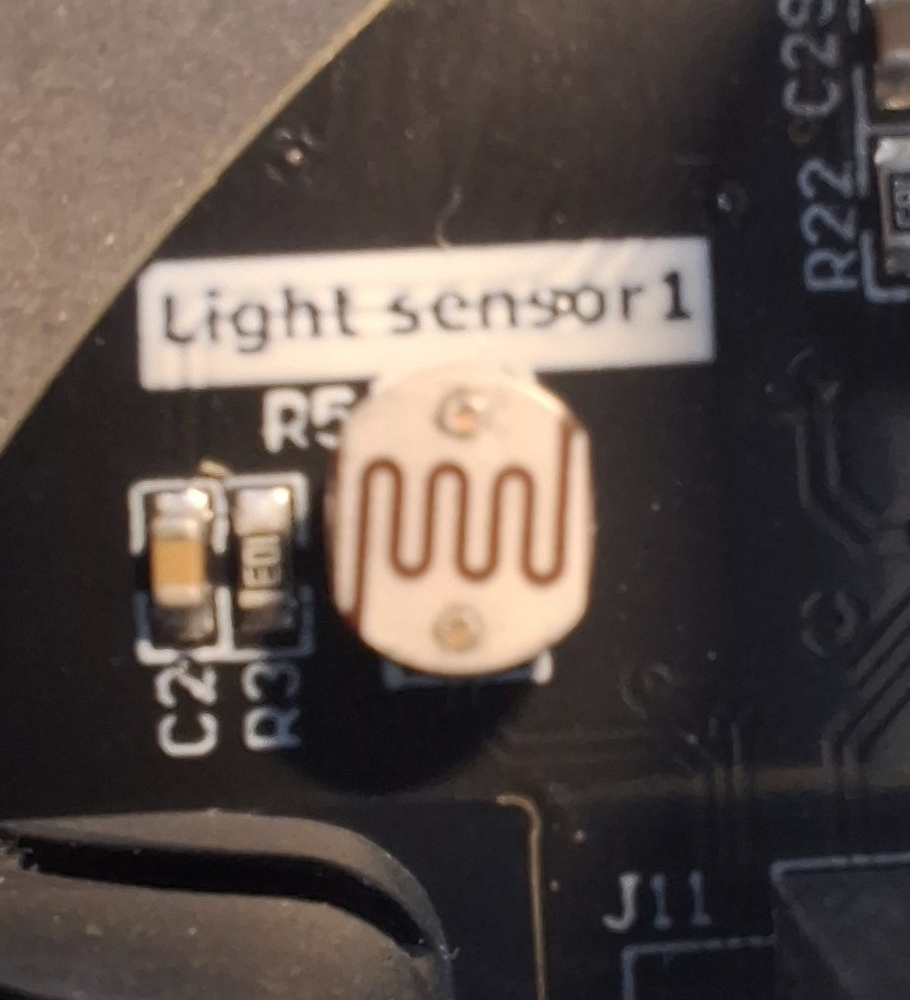
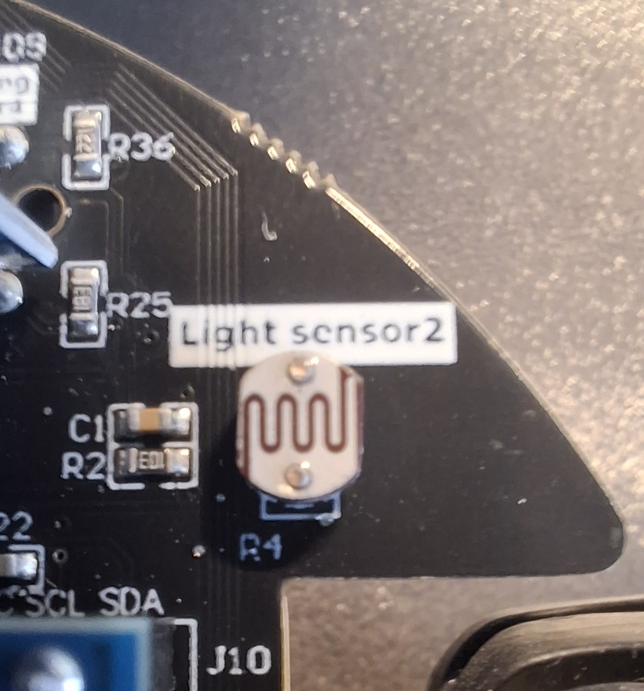
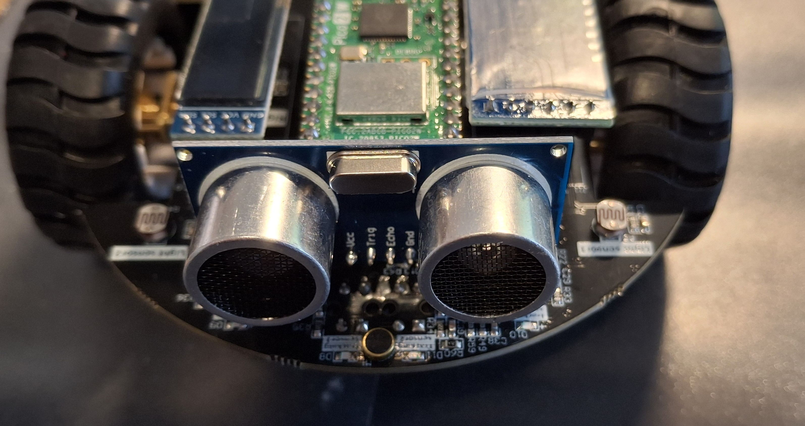
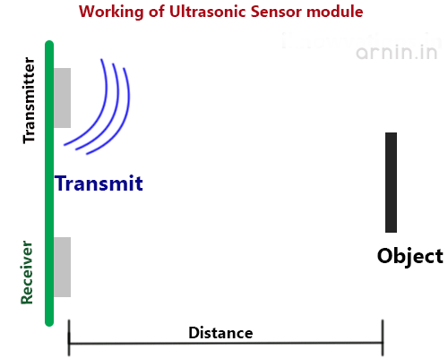
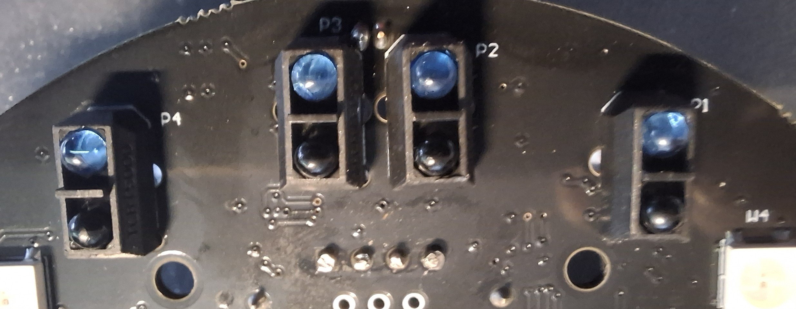
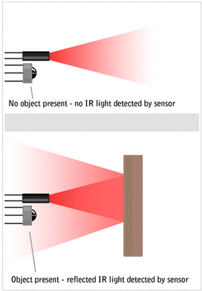

Les 4: Programmeren van sensoren
Een sensor is een apparaat dat fysieke grootheden uit de omgeving meet en deze omzet in signalen die door een computer of microcontroller kunnen worden verwerkt.
Op de pico-robot zijn verschillende sensoren aanwezig die gebruikt kunnen worden om de omgeving te detecteren. In deze les leer je hoe je deze sensoren kunt programmeren en gebruiken in je robotprojecten.
Lichtsensoren
Er zijn twee lichtsensoren op de pico-robot.


Deze sensoren kunnen de hoeveelheid licht in de omgeving meten. Dit doen ze met behulp van een fotoweerstand die de weerstand verandert afhankelijk van de hoeveelheid licht die erop valt. De gemeten waarden kunnen worden gebruikt om beslissingen te nemen in je robotprogramma, zoals het volgen van een lichtbron of het vermijden van donkere gebieden. De waarden die de lichtsensoren teruggeven liggen tussen 0 (geen licht) en 65535 (veel licht). De waarde van de lichtsensoren kan worden uitgelezen met behulp van de ADC (Analog to Digital Converter) functionaliteit van de microcontroller.
Een ADC is een apparaat dat een analoog signaal (zoals de spanning van een sensor) omzet in een digitaal signaal dat door de microcontroller kan worden verwerkt. In dit geval wordt de analoge spanning van de lichtsensoren omgezet in een digitale waarde tussen 0 en 65535.
Hier is een voorbeeldcode om de lichtsensoren uit te lezen en de waarden op de console weer te geven:
from machine import Pin, ADC
import time
# Light1 -> GP27
# Light2 -> GP26
light1 = machine.ADC(27)
light2 = machine.ADC(26)
while True:
# Lees waarden uit
LightS1 = light1.read_u16()
LightS2 = light2.read_u16()
print("light1 is %d"%(LightS1) )
print("light2 is %d"%(LightS2) )
time.sleep(0.5)
De uitleg van dit Python-programma vind je in de Licht Sensor Code Uitleg.
Opdracht
Copieer de bovestaande code in een eigen bestand (gemaakt in Thonny) en voer deze uit op de pico-robot. Observeer de waarden die worden weergegeven op de console terwijl je de lichtsensoren blootstelt aan verschillende lichtomstandigheden (gebruik de zaklamp van je telefoon als lichtbron om op de sensor te schijnen).
Ultrasonische sensor
Een ultrasonische sensor meet de afstand tot een object door geluidsgolven uit te zenden en de tijd te meten die het duurt voordat het geluid terugkeert na het weerkaatsen op het object. Dit maakt het mogelijk om obstakels te detecteren en afstanden te meten, wat handig is voor navigatie en botsingsvermijding. Op de pico-robot is een ultrasonische sensor gemonteerd die kan worden gebruikt om afstanden te meten. 
De ultrasonische sensor werkt door het uizenden van een onhoorbaar ultrasonisch signaal via een zender (transducer). Wanneer dit signaal een object raakt, wordt het teruggekaatst en opgevangen door een ontvanger (receiver). De tijd die het signaal nodig heeft om heen en terug te reizen wordt gemeten, en op basis daarvan kan de afstand tot het object worden berekend.  Bron: Ultrasonic sensor HC-SR04 with Arduino
import time
from pico_car import ultrasonic
# Initialiseer ultrasone sensor
ultrasonic = ultrasonic()
while True:
# Lees afstand uit
distance = ultrasonic.Distance_accurate()
print("distance is %d cm"%(distance) )
time.sleep(1)
De uitleg van dit Python-programma vind je in de Ultrasoon Sensor Code Uitleg.
Opdracht
Copieer de bovestaande code in een eigen bestand (gemaakt in Thonny) en voer deze uit op de pico-robot. Observeer de waarden die worden weergegeven op de console terwijl je voor de sensor een voorwerp(je hand kan ook) houd op verschillende afstanden van de sensor.
Trackingsensoren
Er zijn vier trackingsensoren op de pico-robot. Met deze sensoren kan de robot lijnen op de grond volgen, bijvoorbeeld een zwarte lijn op een witte ondergrond.

De sensoren werken door het reflecteren van licht: wanneer de sensor boven een donkere lijn staat, wordt minder licht teruggekaatst dan wanneer deze boven een lichte ondergrond staat. Hierdoor kan de robot bepalen of hij zich boven de lijn bevindt of niet.
Er wordt een bijzijzonder soort licht gebruikt, infrarood licht, dat voor mensen onzichtbaar is maar wel door de sensoren kan worden gedetecteerd.
De trackingsensoren geven een digitale waarde terug: 0 (nul) wanneer ze een donkere lijn detecteren (zwart) en 1 (één) wanneer ze een lichte ondergrond detecteren (wit). De trackingsensoren worden gebruikt om op korte afstand een lijn te detecteren en te volgen.

Zoals al beschreven is het licht niet zichtbaar voor het menselijk oog, maar je kunt het licht wel zien door met de camera van je telefoon naar de sensoren te kijken terwijl ze actief zijn. Je zult een zwak paarsachtig licht zien dat door de infrarood LED’s van de sensoren wordt uitgezonden.
Dit kun je thuis ook doen met een afstandsbediening van een televisie: richt de afstandsbediening op de camera van je telefoon en druk op een knop. Je zult een lichtflits zien op het scherm van je telefoon, wat het infrarode licht van de afstandsbediening is. Zo kun je controleren of de batterijen van de afstandsbediening nog werken!
Hier is een voorbeeldcode om de trackingsensoren uit te lezen en de waarden op de console weer te geven:
from machine import Pin
import time
# Definieer de lijnvolg sensoren, 1-4 van links naar rechts
# Zwart wordt herkend als 0 en wit als 1
# Tracing_1 Tracing_2 Tracing_3 Tracing_4
# 2 3 4 5
Tracing_1 = Pin(2, Pin.IN)
Tracing_2 = Pin(3, Pin.IN)
Tracing_3 = Pin(4, Pin.IN)
Tracing_4 = Pin(5, Pin.IN)
while True:
print("T1: %d T2: %d T3: %d T4: %d "%(Tracing_1.value(),Tracing_2.value(),Tracing_3.value(),Tracing_4.value()))
time.sleep(0.1)
De uitleg van dit Python-programma vind je in de Trackingsensor Code Uitleg.
Opdracht
Copieer de bovestaande code in een eigen bestand (gemaakt in Thonny) en voer deze uit op de pico-robot. Plaats de robot op een oppervlak met een duidelijke lijn (bijvoorbeeld een zwarte tape op een witte vloer) en observeer de waarden die worden weergegeven op de console terwijl de robot over de lijn beweegt.